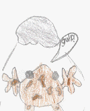

by John Michael Howe (04/11/2001)
There was a brown frog called Hopper ...
He was in his house and the excitement was mounting in him to go snow-boarding.
He went to a summit of a mountain 10 minutes after he wanted to go snow-boarding.
He jumped on his snow-board and started to slide down.
Later he was going at 100 mph - he could not move at all - there in front of him was a tree !
A split second before he was going to hit the tree he jumped in the air and made the snow-board dodge the tree, but he landed in the tree !
Then he saw his board rush by so he hopped back on.
He could move a bit now, but not enough to dodge a giant rock !

S M A S H ! ! ! !
Hopper crashed into the rock and went flying !
Then by accident he pushed a dodgy bloke over and landed on his snow-board and he started to slide again !
He then put his hands over his eyes because he was just about to go down a 1 million metre drop !
When he went down it, it felt like his skin was going to rip off and his eyes were going to pop out of their sockets.
When he got to the bottom he went flying in the air and smashed into his house.
He decided not to go snow-boarding any more.
The End